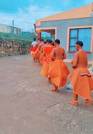

A mokorotlo is a type of straw hat widely used for traditional Sotho clothing,
and is the national symbol of Lesotho and the national symbol of the Basotho and Lesotho people.
This is the Basotho hat that it is used by both gender male or females is was designed using a historical,
mountain called "THABA
ntlenyane".for more information
clic here=> wiki
Seana Marena: Means chief's blanket or to swear by the king,
This particular blanket is exclusively worn by the king and his chiefs,
it has the highest status of all Basotho blankets.
you even look to the meaning in context in the word we can
find the word "MARENA" simplicity means the "CHIEFS".
This is
the most common blankets that repressent our culture it is respected in our culture,
we often give tourist as gift for instance WODEMAYA the most eminent person across
the glope who was welcomed with warm hands in this kingdom on the sky.
An Aranda Basotho blanket is a unique,
culturally significant blanket manufactured by Aranda Textile Mills,
a company that serves as the sole producer of Authentic Basotho Heritage Blankets worldwide.
These wool or wool-blend blankets feature specific designs, bold colors,
and a signature pin-stripe,
with each element carrying deep cultural meaning and representing the identity and traditions of the Basotho people of Lesotho.
for more glarification link >>>>>
"Lefitori" is the Sesotho word for the Victoria England blanket,
which is one of the first and most popular brands of Basotho blankets.
| NAME | CULTURAL PICTURES | DESCRIPTION | LINKS |
|---|---|---|---|
| THETHANA | This is a dress , only girls are supossed to weare. The fibers of the thethana are made using the leaves of a flowering plant from the Gazania family called tsikitlane, which can be found in some areas of the Free State province of South Africa and the Kingdom of Lesotho, although it is becoming increasingly difficult to locate due to expanded land development and erosion. As a result, many artists currently use store bought cotton thread as an alternative material. The first step in producing lithethana is to gather large amounts of this plant, typically filling approximately ten 33-gallon bags for a single garm |
thethana | |
| SEFAHA | Necklaces trace their roots back to ancient civilizations. From the the old generation untill now. These adornments held deep significance. They were worn not only for aesthetic appeal but also as talismans, protective charms, and status symbols.23 Jul 2024 | lesotho-necklace | |
| MOSE OA LEKOKO |  | mose oa lekoko. Skirts made up of woven fibre or cow skin | african-fashion-blog |
| MOKHAHLA | "Mokhahla" refers to a traditional cow skin blanket that was a significant garment in Basotho culture, though it has largely been replaced by the more common wool Basotho blankets today. This tanned cow skin blanket served as a traditional form of clothing for Basotho men, with different types worn by ordinary men and chiefs. | Education |
| DESCIPTION OF THE BELOW IMAGES(THLALOSO) | ALL LINKS RELATED FOR MORE INFO | |
|---|---|---|
| all images |
|
This blankes is commonly used by shepherds or mahokela it is colled kobo e thokoa/p>

The Letlama (or Matlama) blanket is a traditional Basotho blanket,
and its name comes from the Sesotho word "tlama", meaning "to tie" or "to fasten".
Historically, the name "Letlama" also referred to a specific regiment of King Moshoeshoe I's army,
symbolizing a strong, binding connection between the men.
Sefatla is a between shoe that is made out of facial skin of an ox (sefatla) which is scraped,
dried and softened then cut into the desired shape and shoe size.
These types of shoes were normally worn by men during cold weather.
Basotho morden attire , they wear sechoeshe altogether with sesotho blankets and hats,
for instance mekorotlo and lianamarena etc.